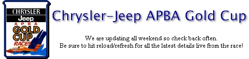

|
 |
|||||||||||||||||||||||||||||||||||||||||||||||||||||||||||||||||||||||||||||||||||||||||||||||||||||||||
Thursday in Review | Friday in Review | Saturday in Review | Sunday ResultsThursday in the pits!Thursday Unlimited Qualifying Results:
A look back on Thursday's full coverage 11:18 PM update... Unlimited Light
update... Photos! 4:56 PM update... We are in an Unlimited testing period which will close out the day. We will return with photos this evening! 4:27 PM update... Earlier this week we announced the launch of a new section here on Hydros. Tentatively titled Hydros Web Watch, this area joins our News Wire section and covers changes, links and new content available on the web. Today, we've posted a brief update to the area linking in a Detroit News story relating to the race weekend. 3:45 PM update... The piston powered U-3 will be known as Vacationville.com this weekend. Vactionville.com is billed as the west's premier source of vacation rental condominiums, homes, and villas. You can visit them on the web at www.vacationville.com. 2:51 PM update... We have about twenty-five minutes left in today's session. We will update you with the full summary of the day's qualifying shortly. 2:21 PM update... The Unlimited Hydroplane Racing Association has been acquired by HYDRO-PROP, Inc.! Click here for the full press release. 1:53 PM update... We have word that the U-2 Miss Chrysler Jeep speed of 153.879 was thrown out for a violation. 1:51 PM update... Three lap averages...
The U-25 Miss Freei was out turning a 97.411 & 138.218. The U-16 Miss E-Lam Plus is out on the course at this time. 1:00 PM update... We are back from the lunch break and we have boats heading out to the water. The U-2 Miss Chrysler Jeep (known on the full circuit as the Freddie's Club Casinos) and the U-10 York and Shelby Enterprises presents Miss DYC are on the water. The U-9 Carpenter Communications is on the sling. 11:50 PM update... The course is shutting down for a little over an hour. Unlimited testing and qualifying returns at 1:00 PM. 11:40 PM update... Here's the latest updated information...
The U-1 Miss Budweiser was out a few moments ago and came in for a media pass that drenched the fans in the stands. It was a close up look at a flying red blur followed by a ton of water! 11:17 AM update... Here's some updated information. Again these are three lap averages...
The U-1 Miss Budweiser (T-5) is the high qualifier at this point at 162.850. 10:57 AM update... Here are some three lap speed averages from the morning qualifying/testing session...
10:22 AM update... We have an IMAX film crew on hand this morning. They will be filming a segment for a new movie this weekend. The final product will be shown as part of the 300th anniversary of Detroit. As the racing has a long association with the history of the city, our fleet will be part of the show! 9:43 AM update... As it's Thursday in the pits, connections are just getting set up and speeds will have to wait until we have a firm feed from the judge's stand. We expect that later today. The U-16 Miss E-Lam Plus is out on the course at this time with Mark Evans at the helm. While we wait to bring you all the details, did you know that the Chrysler Jeep Superstores are sending metro Detroit kids to a day at the boat races on the river? 1,000 kids are getting a chance this weekend to learn about the history and science of boating at the Chrysler Jeep APBA Gold Cup during the 11th year of the Thunderfest Educational Outreach Program. The boat races on the Detroit River between Belle Isle and Jefferson Avenue are much more than just another sporting event, and the Chrysler Jeep Superstores are giving metro area school kids a chance to learn more about it. "The Gold Cup itself is the oldest trophy in American motorsports," said Mark Snethkamp, president of the Chrysler Jeep Superstores Association of Southeast Michigan. "It dates back to 1903 with automobile engines and wooden hulls and encompasses today’s aircraft turbines and composite materials hydroplanes. "The race is rich with incredible history and tradition. Additionally, boat racing has been a test bed for dozens of creative scientific innovations in marine design, safety and materials," said Snethkamp, who is also president of Bill Snethkamp Chrysler Jeep Superstore in Highland Park. "We’re very proud to be able to offer these kids a first-hand experience to one of the most significant events on the metro Detroit calendar." New Kids on the Course is an educational outreach program that the Spirit of Detroit Thunderfest, the association that organizes the annual boat races on the Detroit River, has been conducting since 1990. Knowledgeable, enthusiastic members of the Unlimited Detroit Fan Club guide the kids and their advisors through the boat pits, introduce them to drivers and race boat crews and accompany them during practicing and qualifying. "The kids get a real opportunity to meet and talk with the drivers and crew people who guide these boats to speeds of 200 miles per hour on their hometown river," Snethkamp said. "They also have a chance to study the boats, both racing on the river and out of the water while crews are adjusting and changing engines, propellers, wings, fins and other equipment. The experience is both exciting and educational." Most of the groups of students will enhance their boating experience with a visit to the Dossin Great Lakes Museum on Belle Isle to learn more about marine history on the Detroit River and Great Lakes. Students participating in the Chrysler Jeep Superstores Association New Kids on the Course program come from the following organizations: Boys & Girls Clubs of Detroit, Dearborn, South Oakland County and Lake Orion; Detroit Police Athletic League; Detroit Headstart Program; Focus Hope; Down River, Lakeshore, Macomb, North Oakland, South Oakland, Wayne-Westland and Western Family YMCAs. 9:27 AM update... The U-1 Miss Budweiser was the first on the course this morning. The U-9 Carpenter Communications, the U-5 Appian Jeronimo, the U-10 York International and the U-16 Miss E-Lam Plus have been out. They were certainly not exaggerating when they described how bright the U-16 is this season. It will wake you up in the morning. The photos I've seen on the web just don't do it justice. We'll be back with speeds shortly. 8:00 AM update... We have a full mix of Unlimiteds in the pits at this time. Going from right to left across the pits, we have the U-2 Miss Chrysler Jeep, the U-8 Llumar Window Film, U-16 Miss E-Lam Plus, the U-5 Appian Jeronimo, the U-10 York and Shelby Enterprises presents Miss DYC, the UL-15 Graham Trucking, the U-9 Carpenter Communications, the U-6 Miss Madison, U-1 Miss Budweiser (two hulls), U-3 Master Tire and the U-25 Miss Freei. We haven't made our way over to Bell Isle yet so we have no word on the lights on that side of the water. We'll nail down the rest of the roster soon.
|
|||||||||||||||||||||||||||||||||||||||||||||||||||||||||||||||||||||||||||||||||||||||||||||||||||||||||
| Contact the Hydros (tm) at [redacted]
(C) 2000 Hydros (tm) |
|||||||||||||||||||||||||||||||||||||||||||||||||||||||||||||||||||||||||||||||||||||||||||||||||||||||||